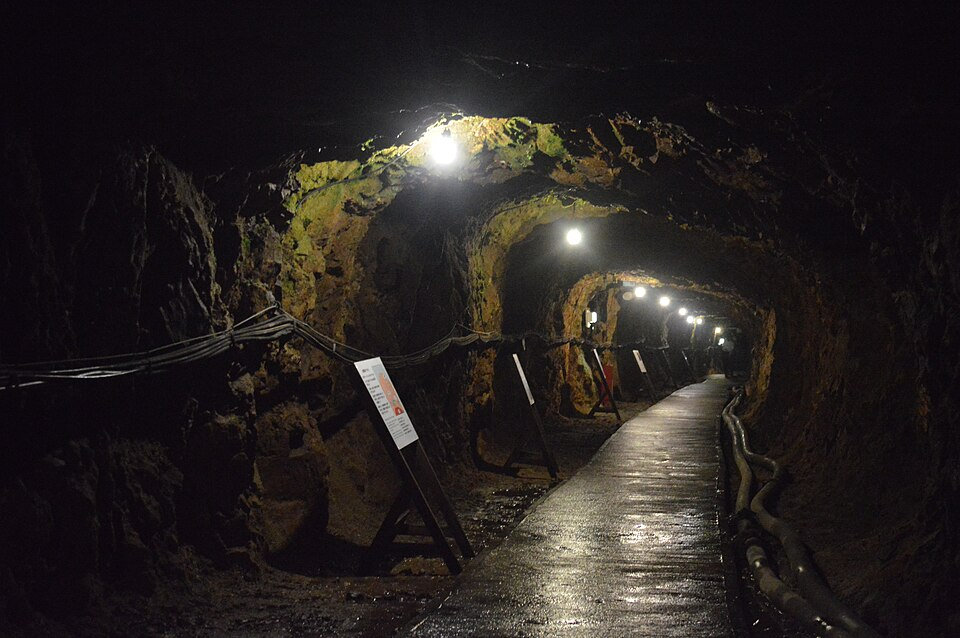佐渡金山本圖展示此景點；複合景點以其中一處具代表性的景色配圖。作者：Asturio Cantabrio作品：Dohyu_Mine_ac_(2).jpg原圖與來源 · CC BY-SA 4.0縮小尺寸；網頁以 4:3 裁切顯示。裁切顯示版本沿用原圖授權。
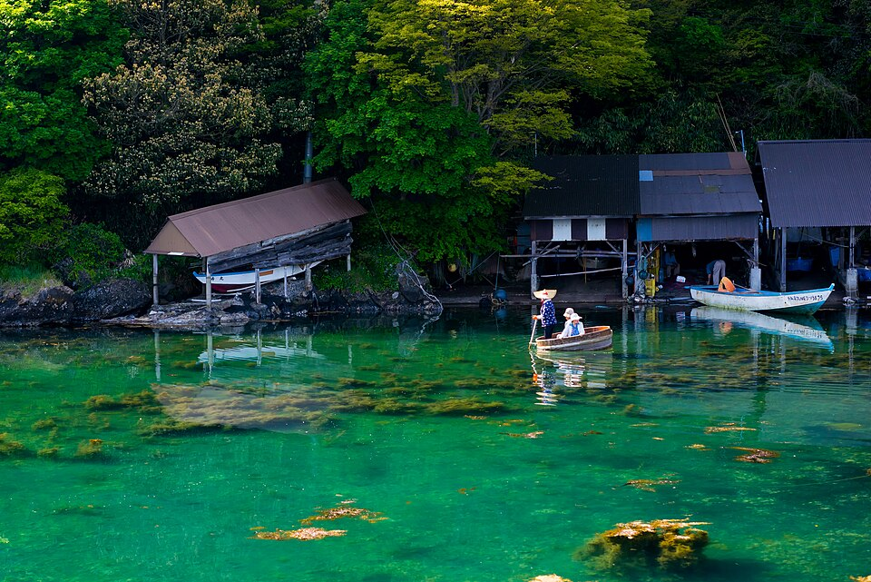佐渡小木木盆舟本圖展示此景點；複合景點以其中一處具代表性的景色配圖。作者：伊藤善行作品：矢島経島たらい舟_-_panoramio.jpg原圖與來源 · CC BY-SA 3.0縮小尺寸；網頁以 4:3 裁切顯示。裁切顯示版本沿用原圖授權。
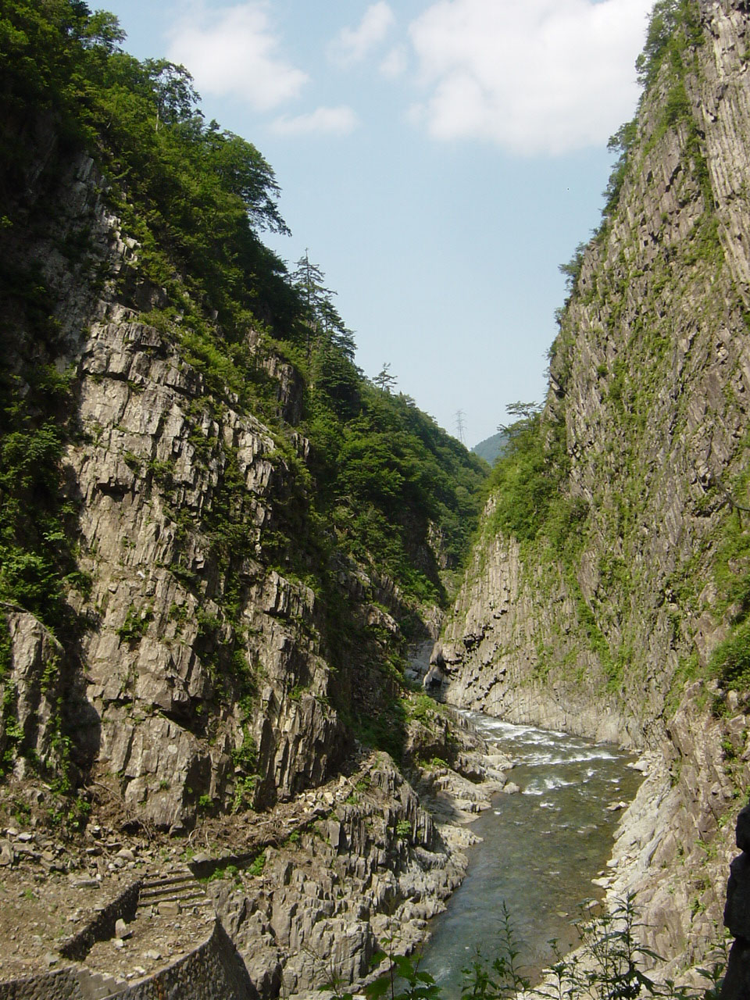清津峽溪谷隧道本圖展示此景點；複合景點以其中一處具代表性的景色配圖。作者：Yasuyuki_Kawano作品：Find47 Niigata-Kiyotsu Gorge Tunnel-m.jpg原圖與來源 · CC BY 4.0縮小尺寸；網頁以 4:3 裁切顯示。裁切顯示版本沿用原圖授權。
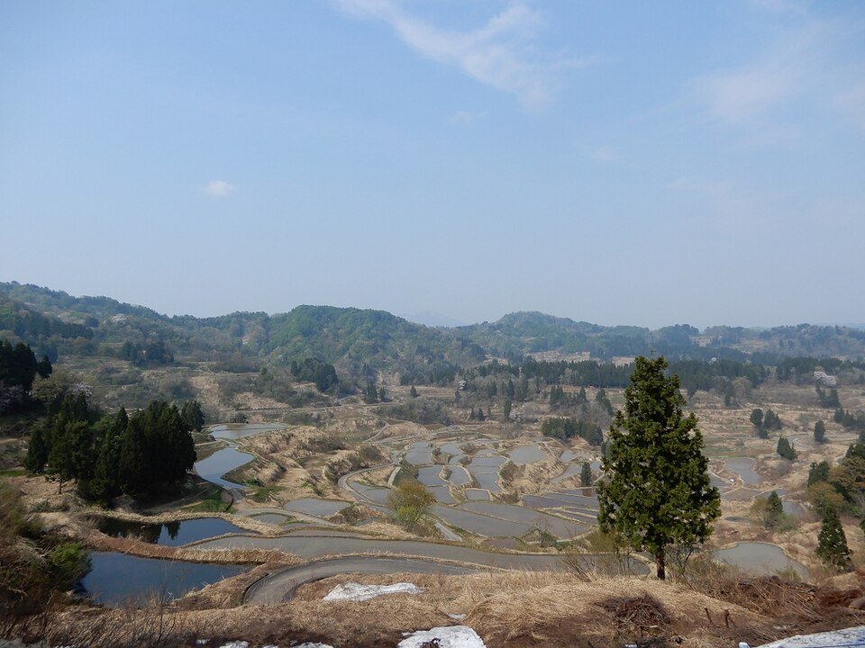星峠梯田本圖展示此景點；複合景點以其中一處具代表性的景色配圖。作者：M Murakami作品：Hoshitoge no Tanada (14287999165).jpg原圖與來源 · CC BY-SA 2.0縮小尺寸；網頁以 4:3 裁切顯示。裁切顯示版本沿用原圖授權。
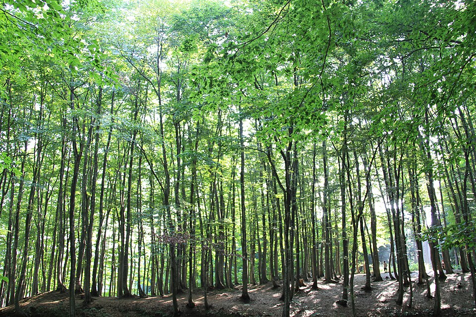美人林本圖展示此景點；複合景點以其中一處具代表性的景色配圖。作者：Fumihiko Ueno作品：Matsunoyamamatsuguchi,_Tokamachi,_Niigata_Prefecture_942-1411,_Japan_-_panoramio.jpg原圖與來源 · CC BY 3.0縮小尺寸；網頁以 4:3 裁切顯示。裁切顯示版本沿用原圖授權。
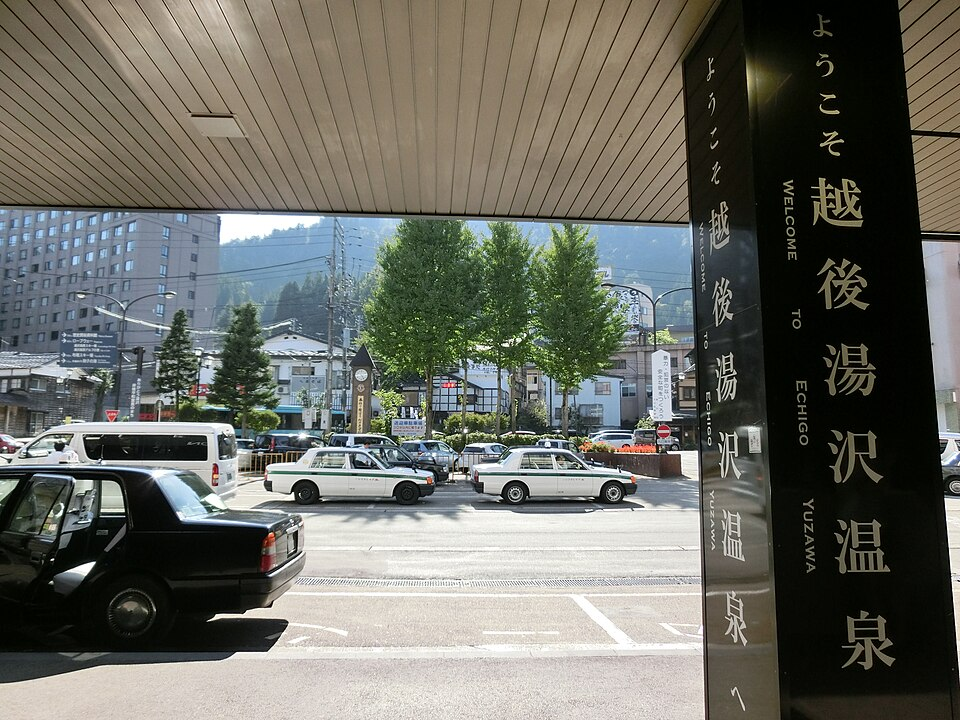越後湯澤溫泉＋滑雪區越後湯澤地區，從 GALA 滑雪場拍攝的雪山景觀。作者：Syced作品：Landscape seen from Gala ski resort (46826).jpg原圖與來源 · CC0縮小尺寸；網頁以 4:3 裁切顯示。裁切顯示版本沿用原圖授權。
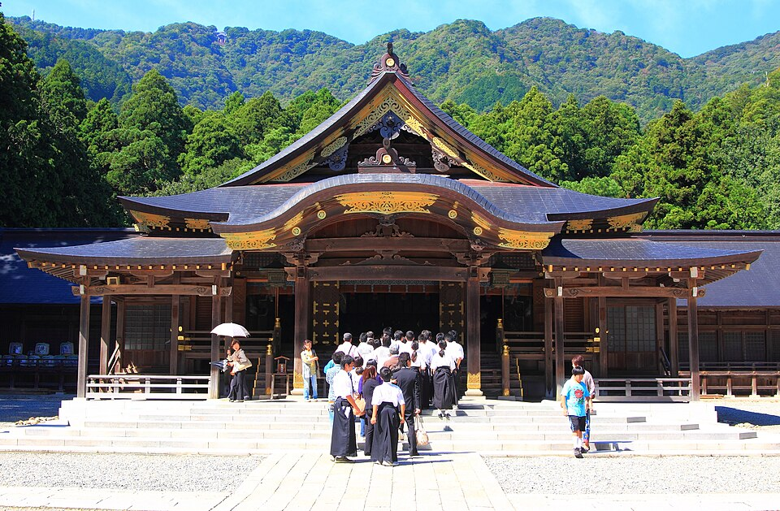彌彥神社本圖展示此景點；複合景點以其中一處具代表性的景色配圖。作者：Kakidai作品：Iyahiko-jinja_1.JPG原圖與來源 · CC BY-SA 4.0縮小尺寸；網頁以 4:3 裁切顯示。裁切顯示版本沿用原圖授權。
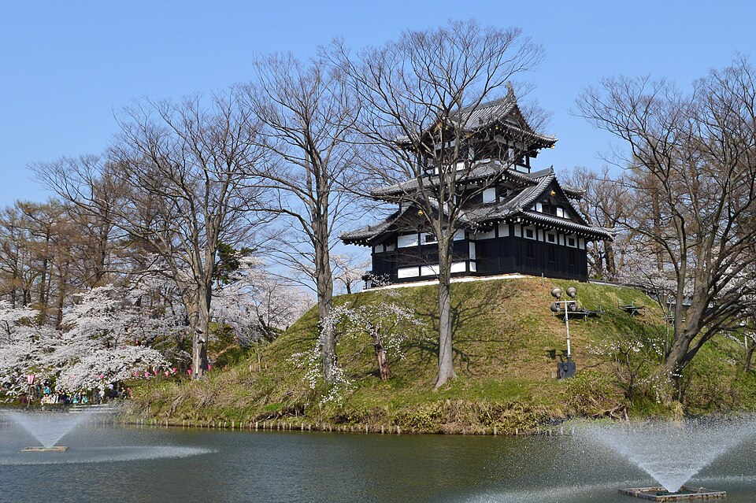高田城址公園本圖展示此景點；複合景點以其中一處具代表性的景色配圖。作者：Saigen Jiro作品：Takada_Castle_yagura.JPG原圖與來源 · CC0縮小尺寸；網頁以 4:3 裁切顯示。裁切顯示版本沿用原圖授權。
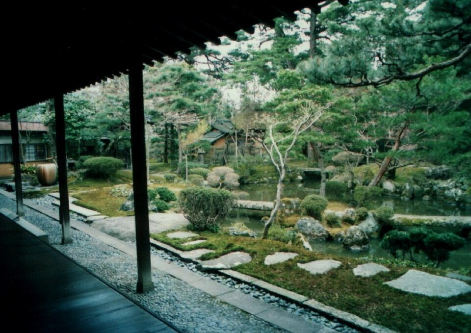北方文化博物館本圖展示此景點；複合景點以其中一處具代表性的景色配圖。作者：Sgico作品：Northern_Culture_Museum_002.jpg原圖與來源 · CC BY-SA 3.0縮小尺寸；網頁以 4:3 裁切顯示。裁切顯示版本沿用原圖授權。
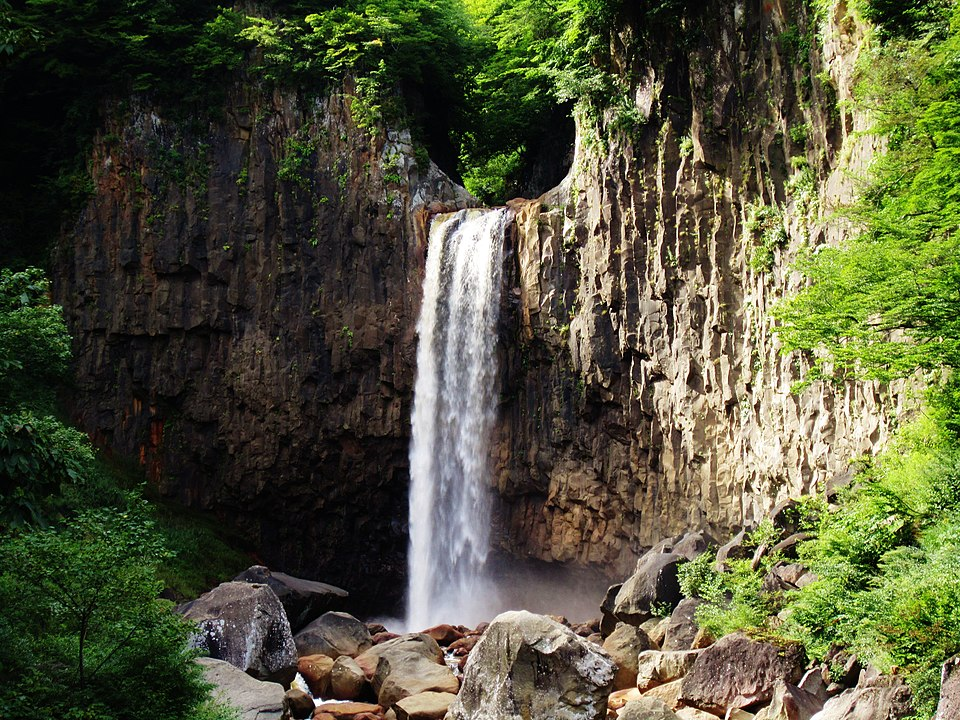苗名瀑布本圖展示此景點；複合景點以其中一處具代表性的景色配圖。作者：photo: Qurren (talk) Taken with Canon IXY 10S (Digital IXUS 210)作品：Naena_Falls_2.jpg原圖與來源 · CC BY-SA 3.0縮小尺寸；網頁以 4:3 裁切顯示。裁切顯示版本沿用原圖授權。
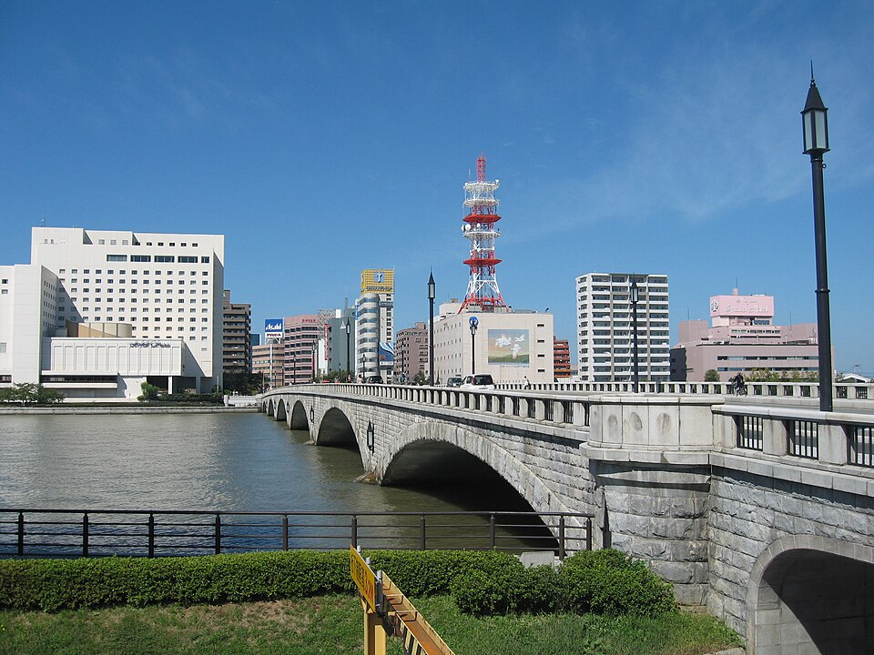萬代橋＋信濃川畔本圖展示此景點；複合景點以其中一處具代表性的景色配圖。作者：DAI-nk作品：Bandaibashi-Bridge_20130929.JPG原圖與來源 · CC BY-SA 3.0縮小尺寸；網頁以 4:3 裁切顯示。裁切顯示版本沿用原圖授權。
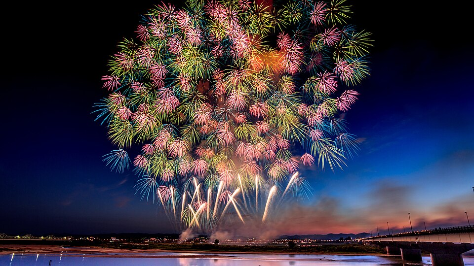長岡花火大會本圖展示此景點；複合景點以其中一處具代表性的景色配圖。作者：Koichi_Hayakawa作品：Find47_Niigata-The_Nagaoka_Fireworks_Festival-m2.jpg原圖與來源 · CC BY 4.0縮小尺寸；網頁以 4:3 裁切顯示。裁切顯示版本沿用原圖授權。
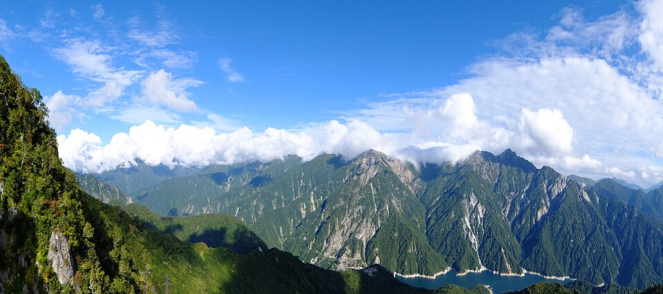立山黑部・室堂＋雪之大谷立山黑部路線的雪之大谷；積雪景觀依季節而異。作者：タチヤマカムイ作品：国立公園立山 雪の大谷.jpg原圖與來源 · CC BY-SA 4.0縮小尺寸；網頁以 4:3 裁切顯示。裁切顯示版本沿用原圖授權。
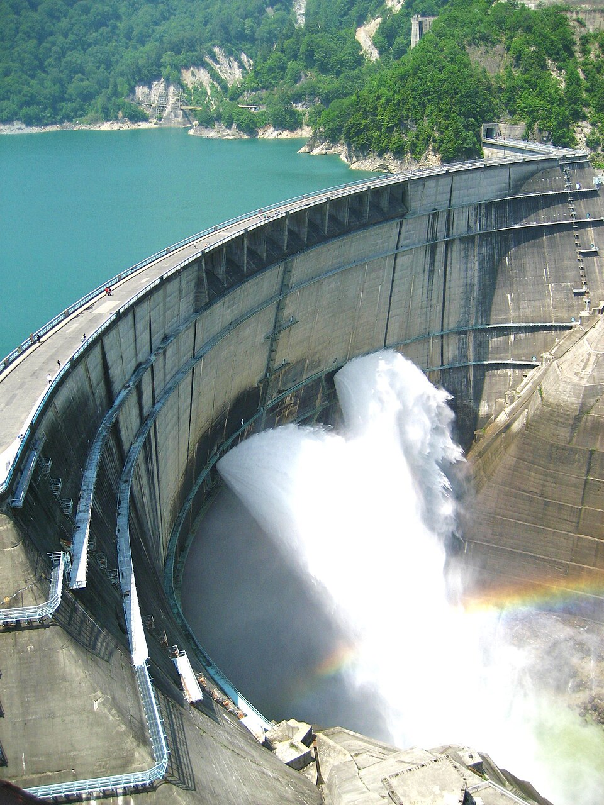黑部水壩本圖展示此景點；複合景點以其中一處具代表性的景色配圖。作者：photo: Qurren (talk), with IXY 10S compact digital camera.作品：Kurobe Dam survey 2.jpg原圖與來源 · CC BY-SA 3.0縮小尺寸；網頁保留照片完整比例。圖片沿用原授權。
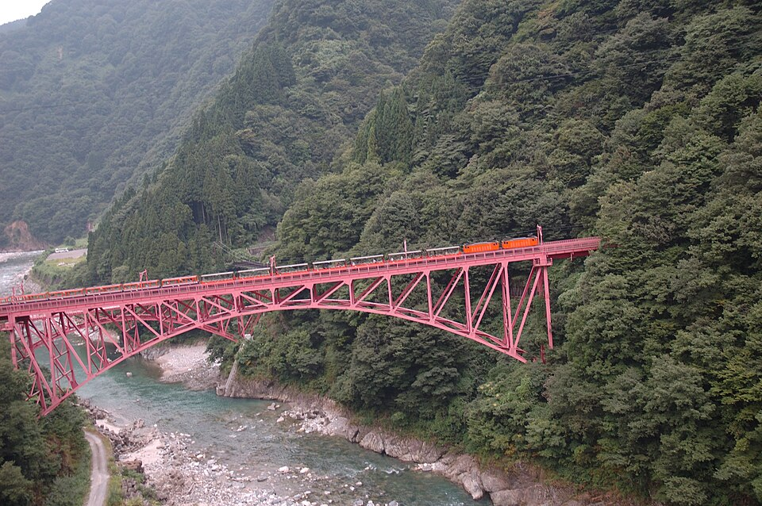黑部峽谷鐵道本圖展示此景點；複合景點以其中一處具代表性的景色配圖。作者：Reggaeman作品：Kurobe Gorge Train on the Bridge.JPG原圖與來源 · CC BY-SA 3.0縮小尺寸；網頁以 4:3 裁切顯示。裁切顯示版本沿用原圖授權。
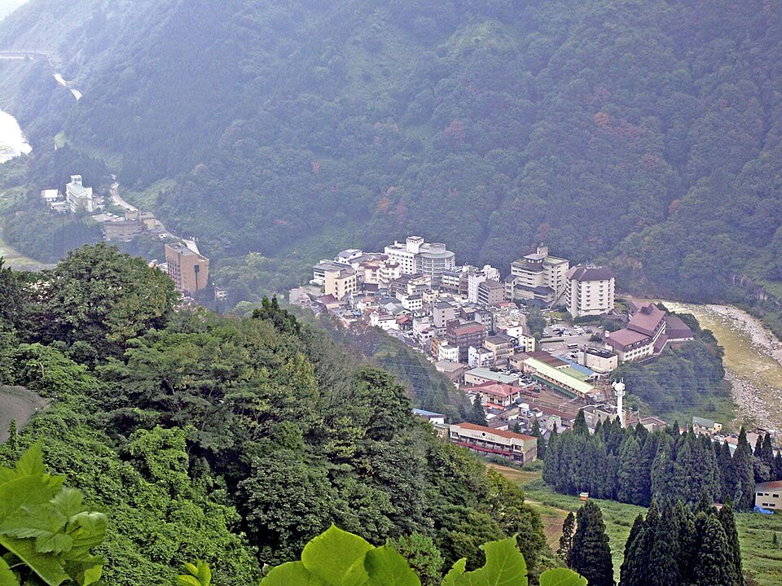宇奈月溫泉本圖展示此景點；複合景點以其中一處具代表性的景色配圖。作者：Fuseoyama作品：Unaduki_Onsens.jpg原圖與來源 · CC BY-SA 3.0縮小尺寸；網頁以 4:3 裁切顯示。裁切顯示版本沿用原圖授權。
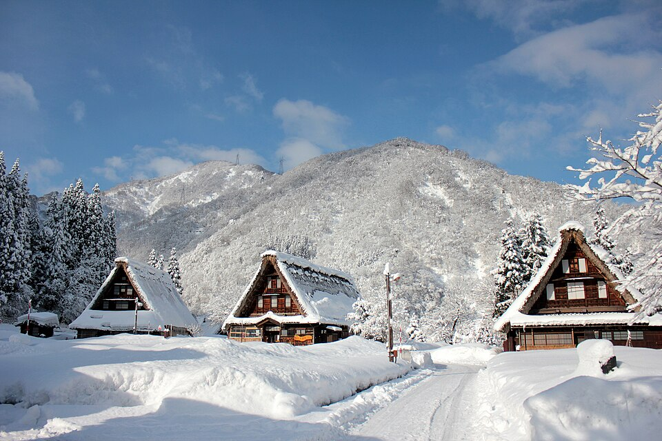五箇山合掌聚落本圖展示此景點；複合景點以其中一處具代表性的景色配圖。作者：Solarisjapan作品：世界遺産菅沼合掌集落.jpg原圖與來源 · CC BY-SA 4.0縮小尺寸；網頁以 4:3 裁切顯示。裁切顯示版本沿用原圖授權。
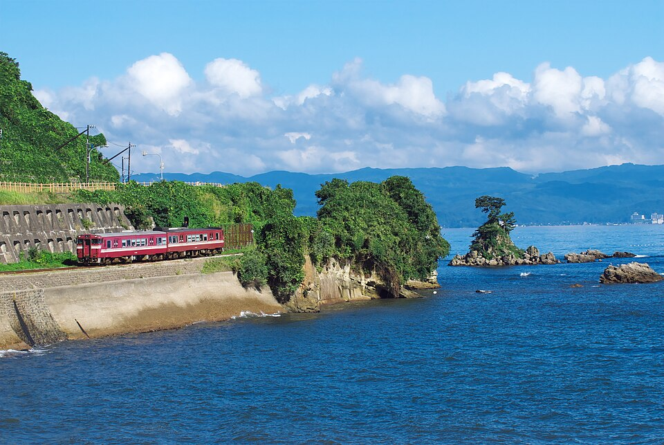雨晴海岸本圖展示此景點；複合景點以其中一處具代表性的景色配圖。作者：DD51612 at Japanese Wikipedia作品：Himi-line-amaharashi.jpg原圖與來源 · CC BY 3.0縮小尺寸；網頁以 4:3 裁切顯示。裁切顯示版本沿用原圖授權。
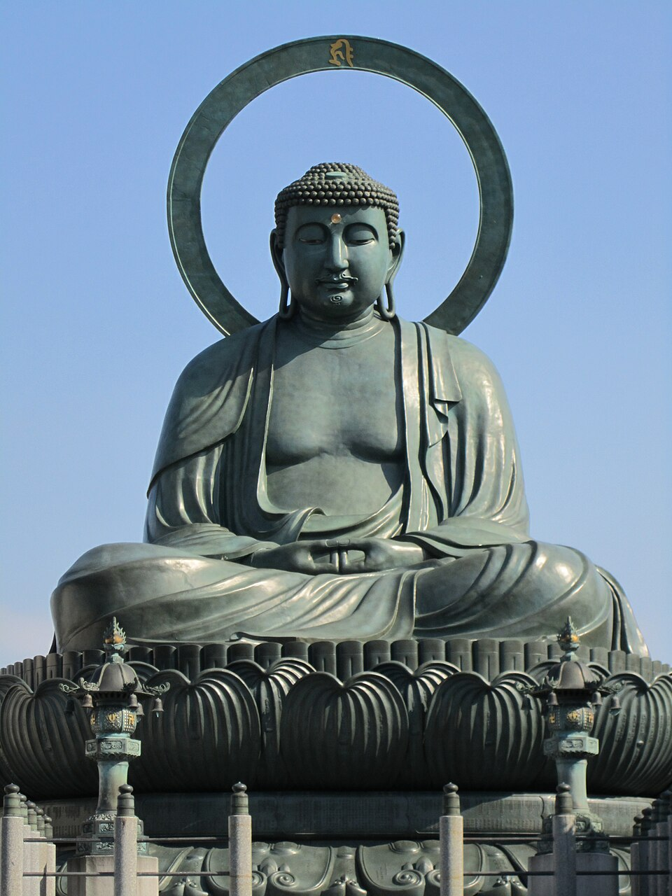高岡大佛＋瑞龍寺本圖展示此景點；複合景點以其中一處具代表性的景色配圖。作者：柑橘類 (talk)作品：Takaoka Daibutsu 2011-07-15 01.jpg原圖與來源 · CC BY-SA 3.0縮小尺寸；網頁保留照片完整比例。圖片沿用原授權。
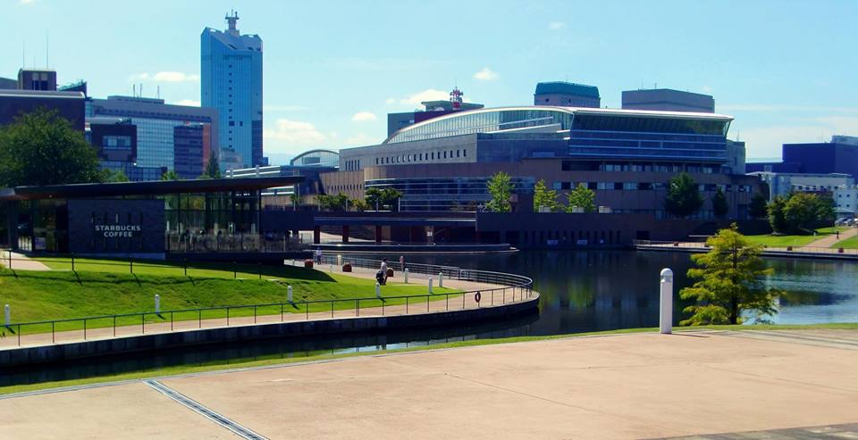富岩運河環水公園本圖展示此景點；複合景點以其中一處具代表性的景色配圖。作者：タチヤマカムイ作品：Starbucks_Toyama_Canal_Park.jpg原圖與來源 · CC BY-SA 4.0縮小尺寸；網頁以 4:3 裁切顯示。裁切顯示版本沿用原圖授權。
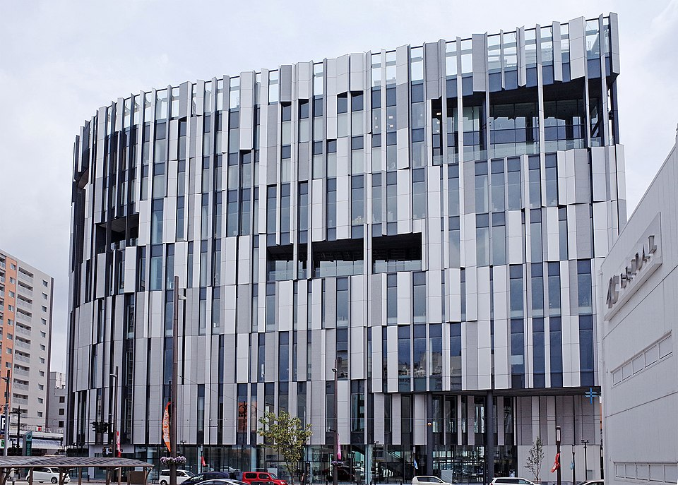富山市玻璃美術館本圖展示此景點；複合景點以其中一處具代表性的景色配圖。作者：Mapmoe作品：TOYAMAキラリ.jpg原圖與來源 · CC BY-SA 4.0縮小尺寸；網頁以 4:3 裁切顯示。裁切顯示版本沿用原圖授權。
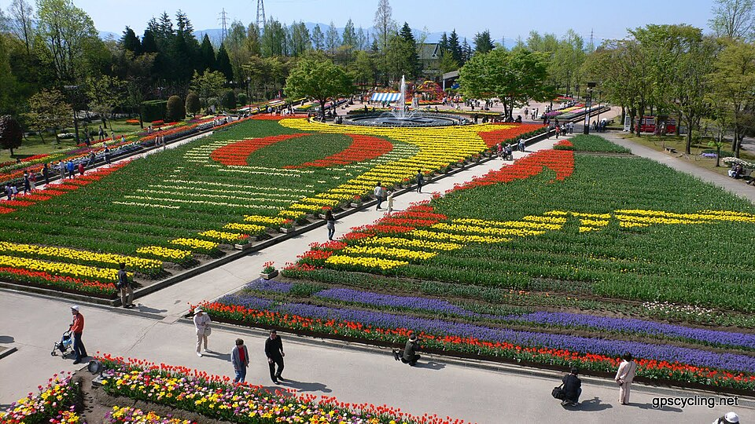礪波鬱金香公園本圖展示此景點；複合景點以其中一處具代表性的景色配圖。作者：Yobito KAYANUMA作品：砺波チューリップ公園_-_panoramio.jpg原圖與來源 · CC BY-SA 3.0縮小尺寸；網頁以 4:3 裁切顯示。裁切顯示版本沿用原圖授權。
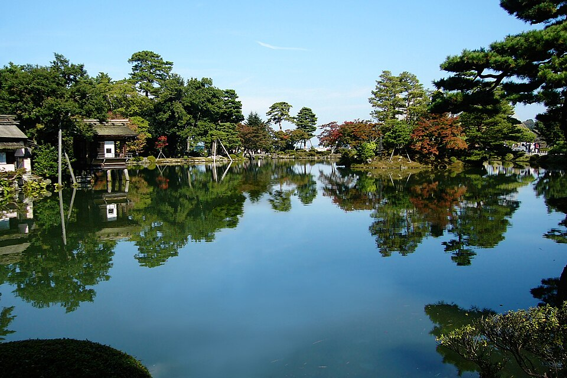兼六園本圖展示此景點；複合景點以其中一處具代表性的景色配圖。作者：Oilstreet作品：Kenrokuen10-r.jpg原圖與來源 · CC BY 2.5縮小尺寸；網頁以 4:3 裁切顯示。裁切顯示版本沿用原圖授權。
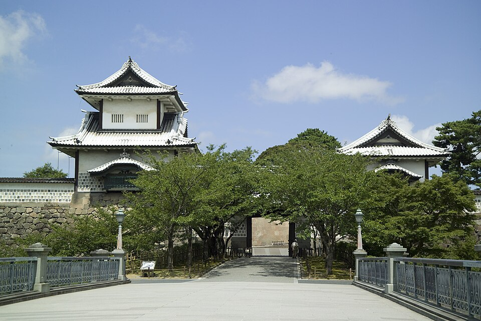金澤城公園本圖展示此景點；複合景點以其中一處具代表性的景色配圖。作者：Fg2作品：Kanazawa-M-5932.jpg原圖與來源 · Public domain縮小尺寸；網頁以 4:3 裁切顯示。裁切顯示版本沿用原圖授權。
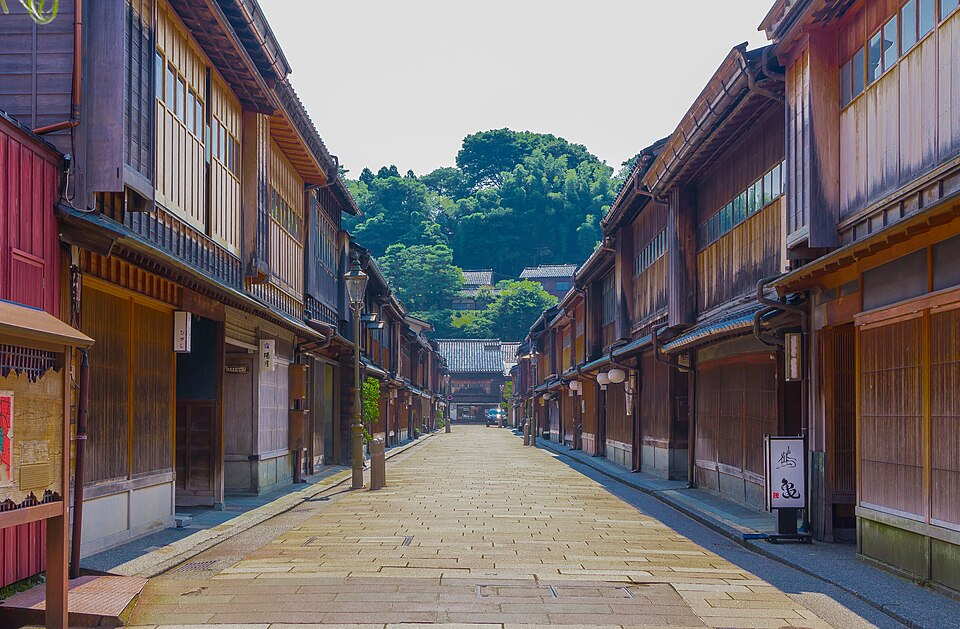東茶屋街本圖展示此景點；複合景點以其中一處具代表性的景色配圖。作者：Kakidai作品：Higashiyamahigashi_2015.JPG原圖與來源 · CC BY-SA 4.0縮小尺寸；網頁以 4:3 裁切顯示。裁切顯示版本沿用原圖授權。
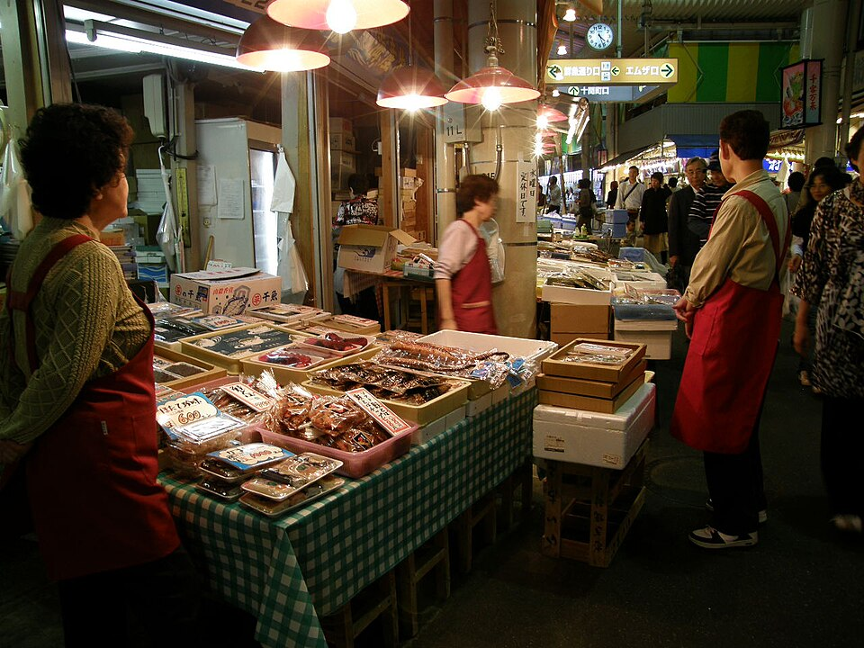近江町市場本圖展示此景點；複合景點以其中一處具代表性的景色配圖。作者：松岡明芳作品：Omicho-ichiba_近江町市場_A091185.JPG原圖與來源 · CC BY-SA 3.0縮小尺寸；網頁以 4:3 裁切顯示。裁切顯示版本沿用原圖授權。
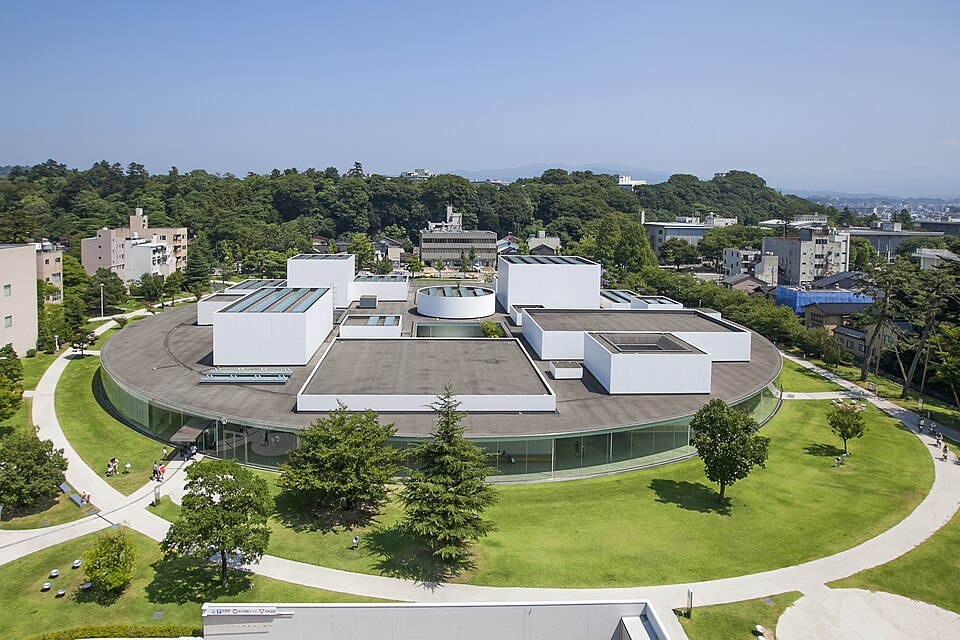金澤21世紀美術館本圖展示此景點；複合景點以其中一處具代表性的景色配圖。作者：金沢市作品：21st_Century_Museum_of_Contemporary_Art,_Kanazawa011.jpg原圖與來源 · CC BY 2.1 jp縮小尺寸；網頁以 4:3 裁切顯示。裁切顯示版本沿用原圖授權。
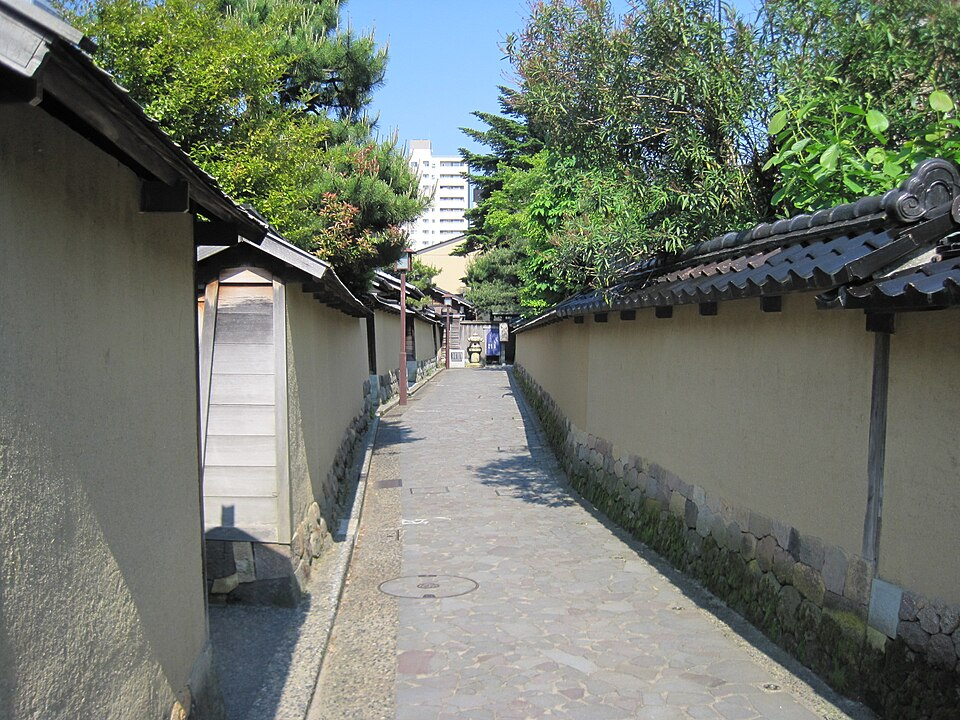長町武家屋敷跡本圖展示此景點；複合景點以其中一處具代表性的景色配圖。作者：Hirorinmasa作品：Nagamachi_Bukeyashiki.jpg原圖與來源 · CC BY-SA 3.0縮小尺寸；網頁以 4:3 裁切顯示。裁切顯示版本沿用原圖授權。
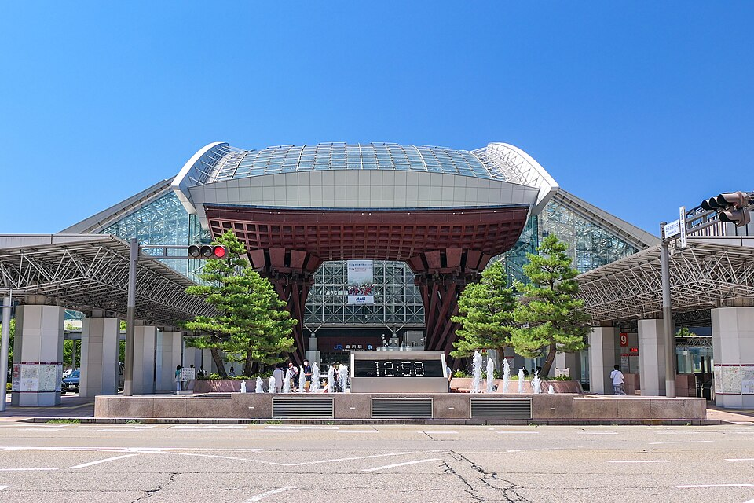金澤站鼓門本圖展示此景點；複合景點以其中一處具代表性的景色配圖。作者：MaedaAkihiko作品：Kanazawa-STA_Kenrokuen-entrance.jpg原圖與來源 · CC BY-SA 4.0縮小尺寸；網頁以 4:3 裁切顯示。裁切顯示版本沿用原圖授權。
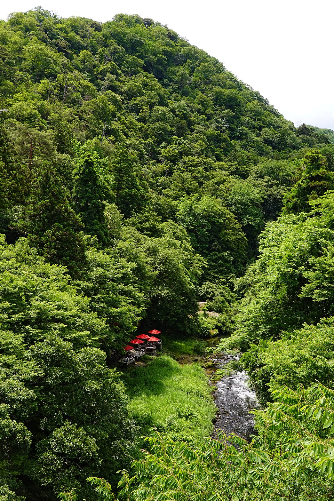山中溫泉＋鶴仙溪本圖展示此景點；複合景點以其中一處具代表性的景色配圖。作者：663highland作品：260606_Doumyogafuchi_Kakusenkei_Kaga_Ishikawa_pref_Japan02s3.jpg原圖與來源 · CC BY-SA 4.0縮小尺寸；網頁以 4:3 裁切顯示。裁切顯示版本沿用原圖授權。
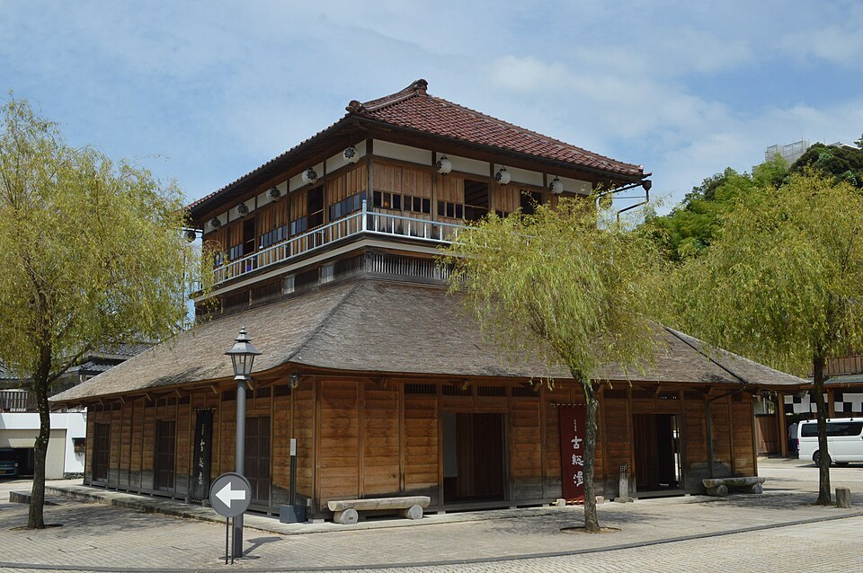山代溫泉本圖展示此景點；複合景點以其中一處具代表性的景色配圖。作者：Asturio Cantabrio作品：Ko-Soyu_ac_(1).jpg原圖與來源 · CC BY-SA 4.0縮小尺寸；網頁以 4:3 裁切顯示。裁切顯示版本沿用原圖授權。
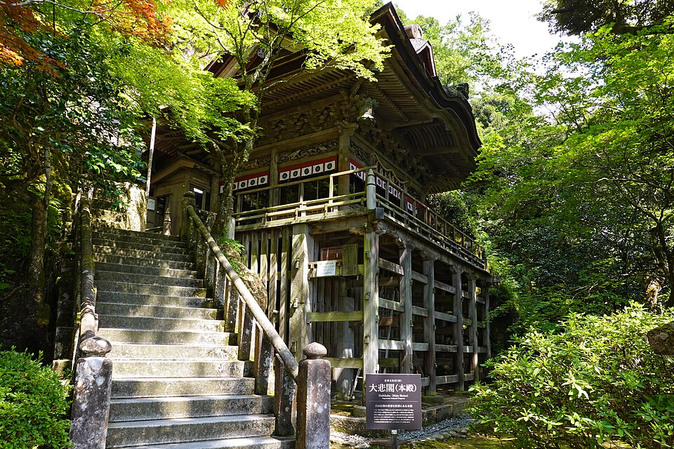那谷寺本圖展示此景點；複合景點以其中一處具代表性的景色配圖。作者：663highland作品：260719_Natadera_Komatsu_Ishikawa_pref_Japan27s3.jpg原圖與來源 · CC BY-SA 4.0縮小尺寸；網頁以 4:3 裁切顯示。裁切顯示版本沿用原圖授權。
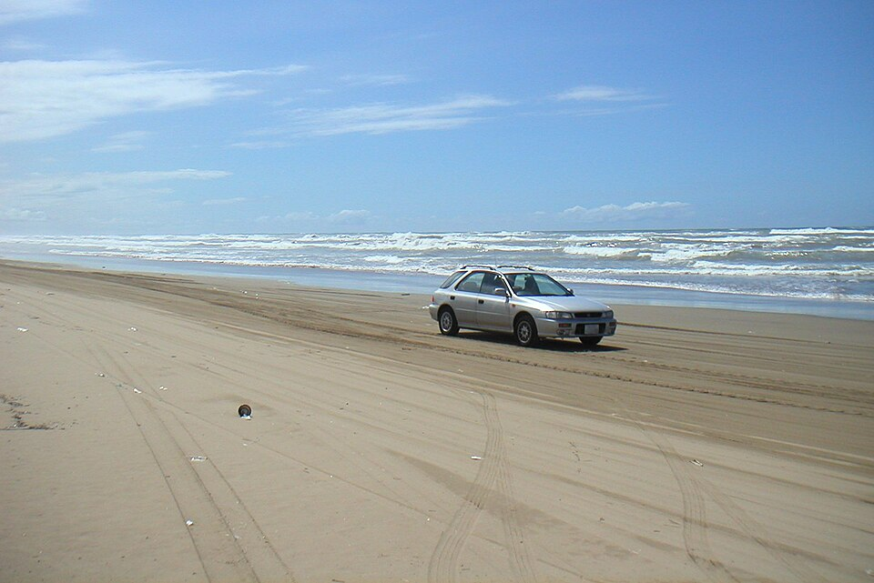千里濱渚海濱公路本圖展示此景點；複合景點以其中一處具代表性的景色配圖。作者：Kwekwe作品：Chirihama_nagisa_driveway.jpg原圖與來源 · CC BY-SA 3.0縮小尺寸；網頁以 4:3 裁切顯示。裁切顯示版本沿用原圖授權。
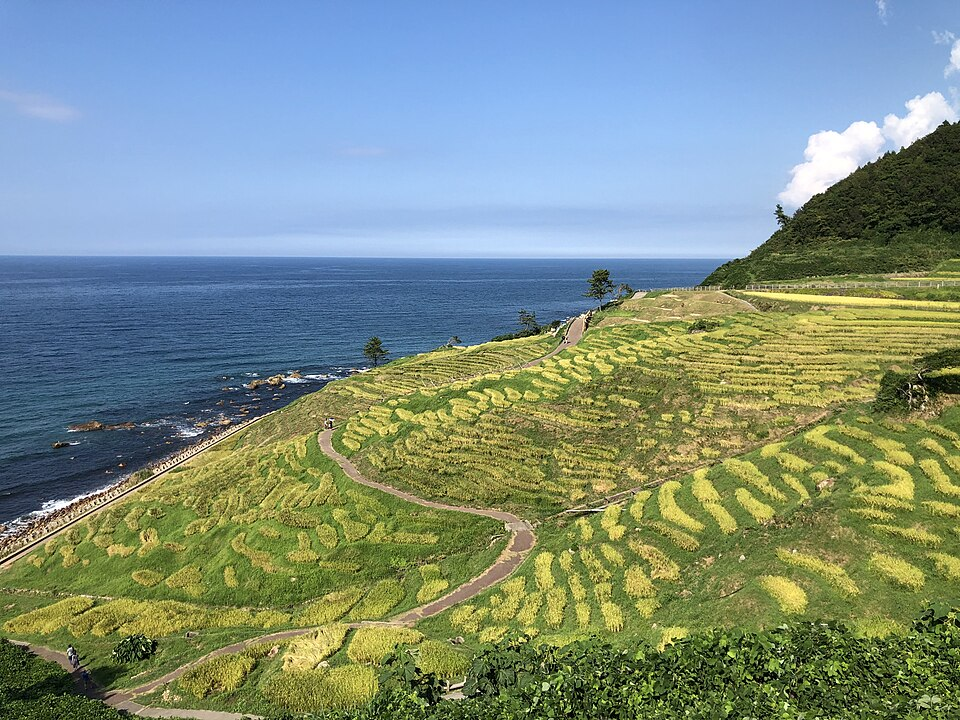白米千枚田本圖展示此景點；複合景點以其中一處具代表性的景色配圖。作者：Totti作品：Shiroyone_Senmaida_200906.jpg原圖與來源 · CC BY-SA 4.0縮小尺寸；網頁以 4:3 裁切顯示。裁切顯示版本沿用原圖授權。
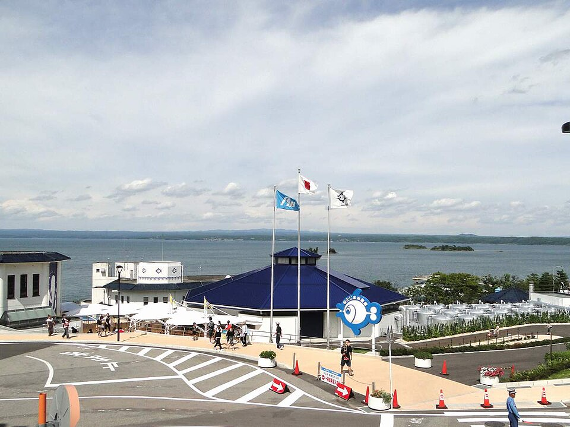能登島水族館本圖展示此景點；複合景點以其中一處具代表性的景色配圖。作者：Fuseoyama作品：Notojima_Suizokukan.jpg原圖與來源 · CC BY-SA 3.0縮小尺寸；網頁以 4:3 裁切顯示。裁切顯示版本沿用原圖授權。
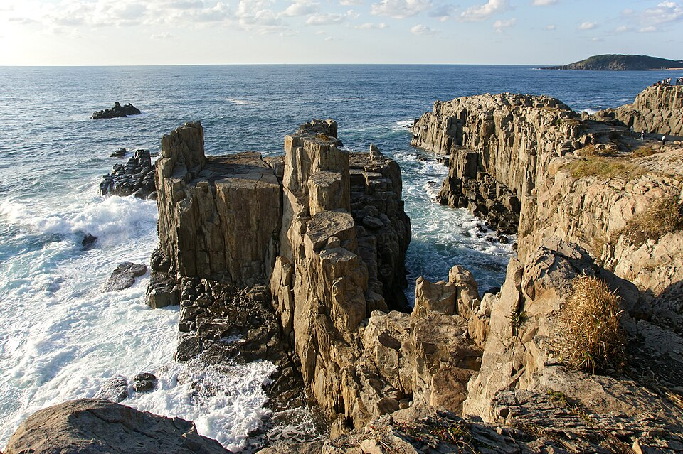東尋坊本圖展示此景點；複合景點以其中一處具代表性的景色配圖。作者：Photo by 663highland作品：081101_Tojinbo_Sakai_Fukui_pref_Japan02bs10.jpg原圖與來源 · CC BY-SA 4.0縮小尺寸；網頁以 4:3 裁切顯示。裁切顯示版本沿用原圖授權。
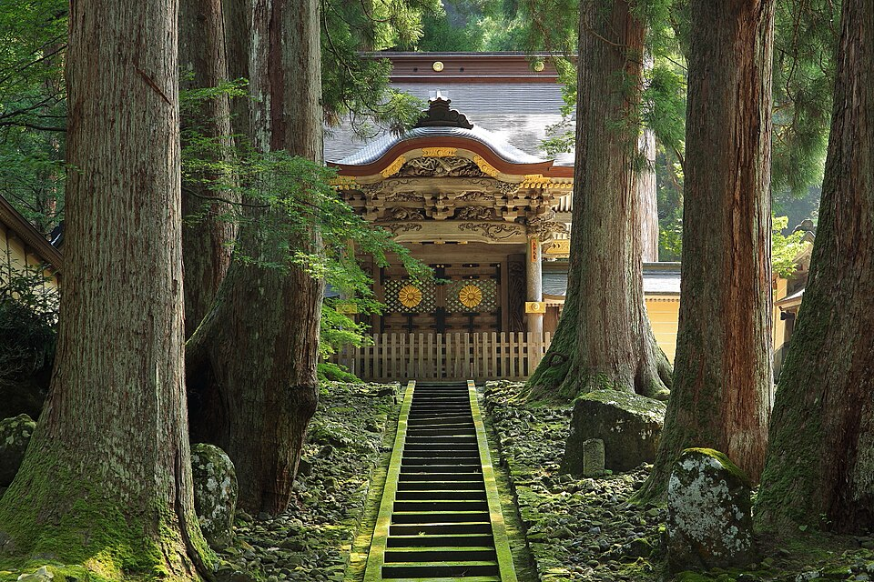永平寺本圖展示此景點；複合景點以其中一處具代表性的景色配圖。作者：Tomio344456作品：Eihei-ji_Temple_Chokushimon,_Eiheiji-cho_2013.jpg原圖與來源 · CC BY-SA 4.0縮小尺寸；網頁以 4:3 裁切顯示。裁切顯示版本沿用原圖授權。
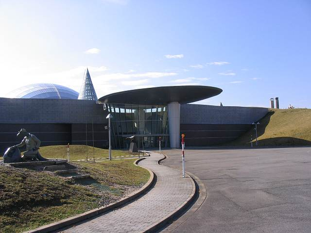福井縣立恐龍博物館本圖展示此景點；複合景點以其中一處具代表性的景色配圖。作者：鷹継剣矢 at the Japanese language Wikipedia作品：Fukui Prefectural Dinosaur Museum.jpg原圖與來源 · CC BY-SA 3.0縮小尺寸；網頁以 4:3 裁切顯示。裁切顯示版本沿用原圖授權。
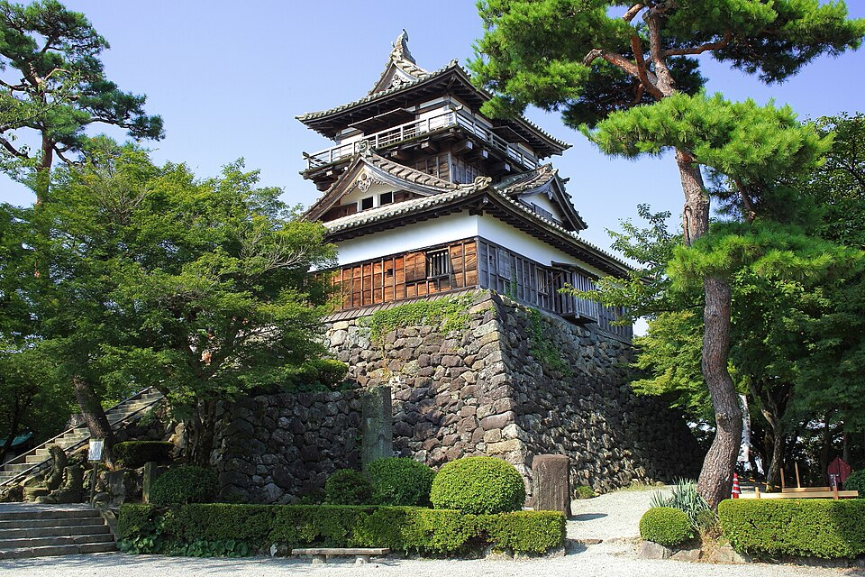丸岡城本圖展示此景點；複合景點以其中一處具代表性的景色配圖。作者：Tomio344456作品：Maruoka_Castle_Keep_Tower,_Maruoka-cho_Sakai_2013.jpg原圖與來源 · CC BY-SA 4.0縮小尺寸；網頁以 4:3 裁切顯示。裁切顯示版本沿用原圖授權。
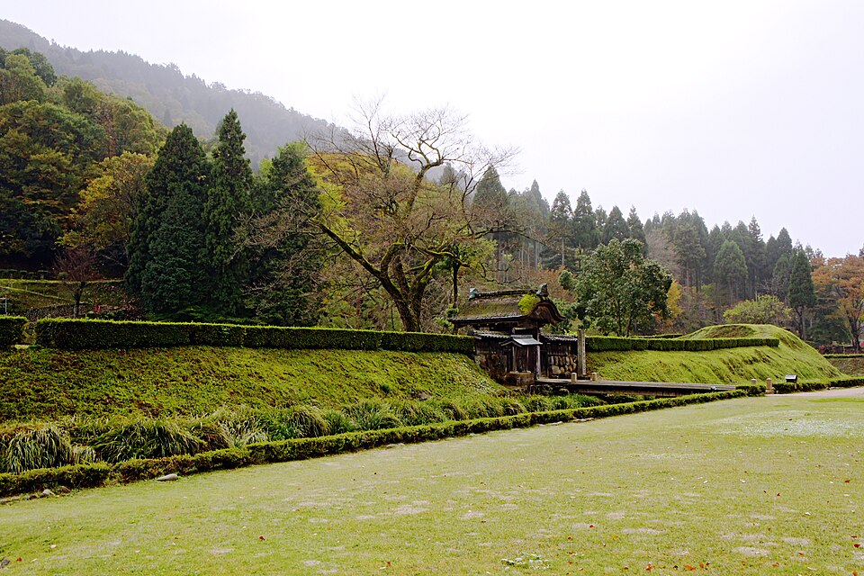一乘谷朝倉氏遺跡本圖展示此景點；複合景點以其中一處具代表性的景色配圖。作者：663highland作品：Asakura_Yakata_of_Ichijodani_Asakura_Family_Historic_Ruins02s3s4440.jpg原圖與來源 · CC BY 2.5縮小尺寸；網頁以 4:3 裁切顯示。裁切顯示版本沿用原圖授權。
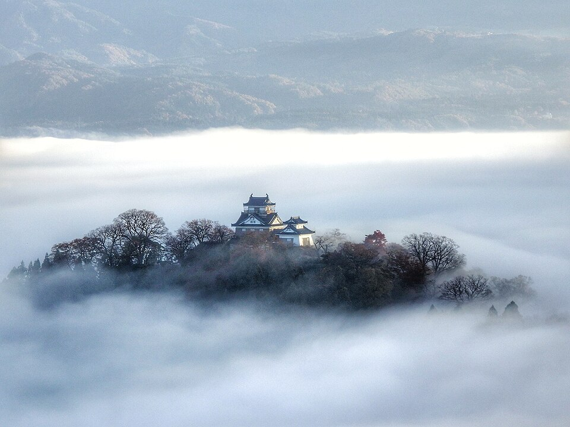越前大野城本圖展示此景點；複合景點以其中一處具代表性的景色配圖。作者：Keisuke MAEDA作品：Echizen_Ono_Castle.jpg原圖與來源 · CC BY-SA 4.0縮小尺寸；網頁以 4:3 裁切顯示。裁切顯示版本沿用原圖授權。
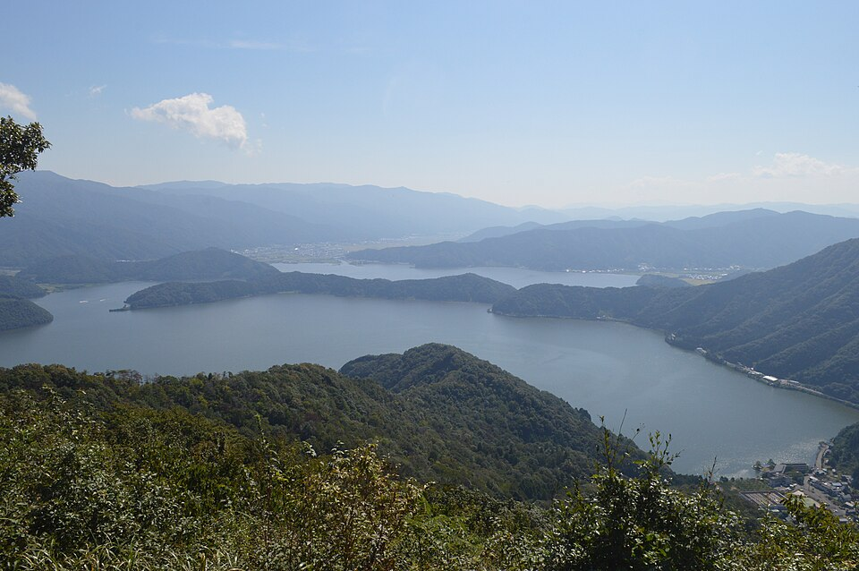三方五湖本圖展示此景點；複合景點以其中一處具代表性的景色配圖。作者：Asturio Cantabrio作品：Mikata Five Lakes ac.jpg原圖與來源 · CC BY-SA 4.0縮小尺寸；網頁以 4:3 裁切顯示。裁切顯示版本沿用原圖授權。
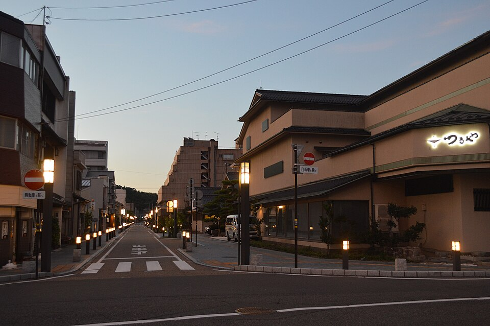蘆原溫泉本圖展示此景點；複合景點以其中一處具代表性的景色配圖。作者：Asturio Cantabrio作品：Tsuruya_Awara_ac_(2).jpg原圖與來源 · CC BY-SA 4.0縮小尺寸；網頁以 4:3 裁切顯示。裁切顯示版本沿用原圖授權。
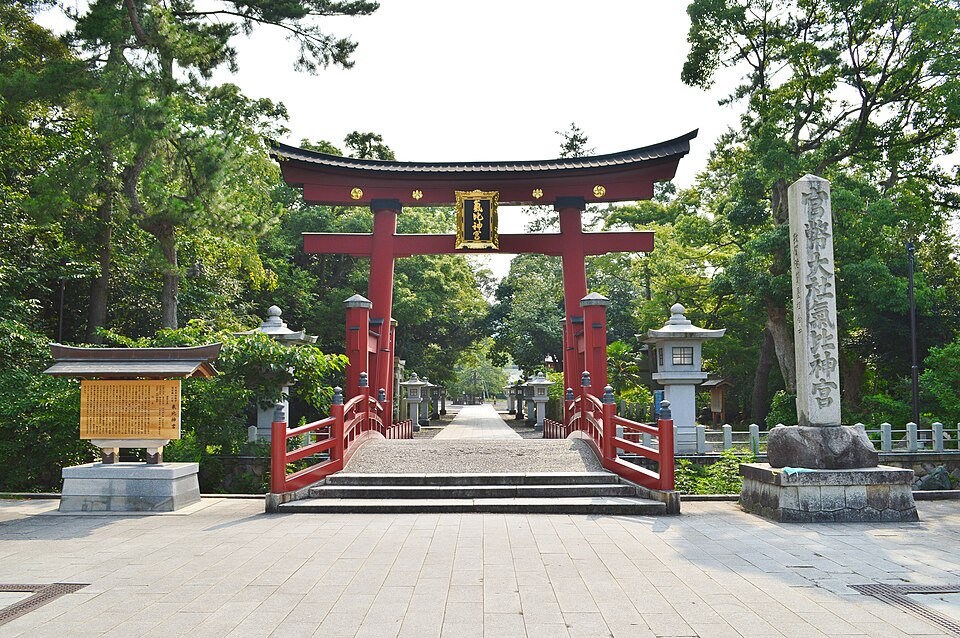氣比神宮本圖展示此景點；複合景點以其中一處具代表性的景色配圖。作者：Saigen Jiro作品：Kehi-jingu_otorii-2.jpg原圖與來源 · CC0縮小尺寸；網頁以 4:3 裁切顯示。裁切顯示版本沿用原圖授權。
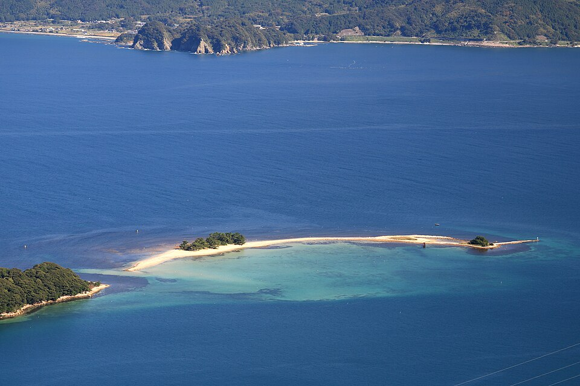水島福井縣敦賀灣的水島，由蠑螺岳方向拍攝。作者：Alpsdake作品：Mizu Island (Fukui).jpg原圖與來源 · CC BY-SA 4.0縮小尺寸；網頁以 4:3 裁切顯示。裁切顯示版本沿用原圖授權。
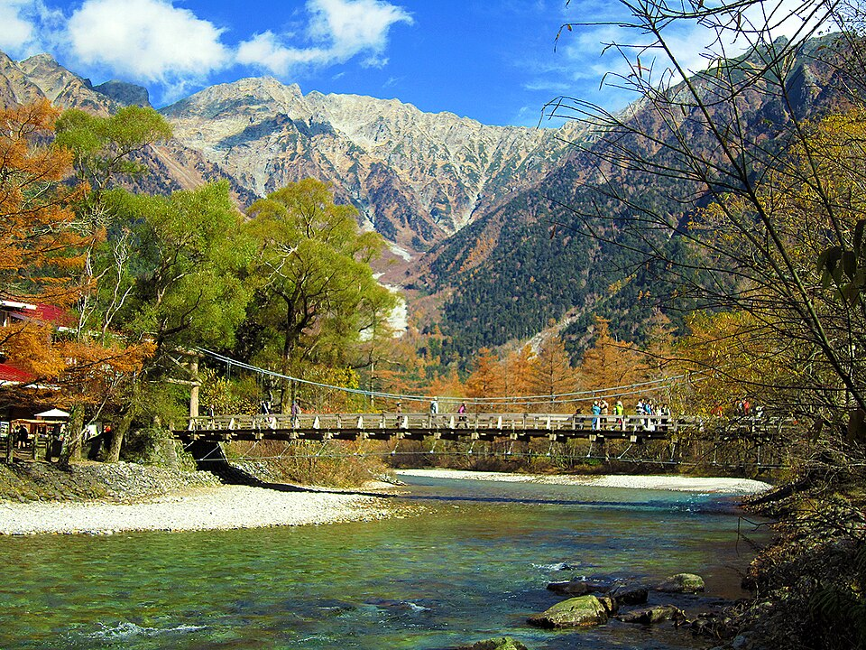上高地本圖展示此景點；複合景點以其中一處具代表性的景色配圖。作者：Hiroaki Kaneko作品：秋の上高地_(Kamikochi_in_autumn)_24_Oct,_2011_-_panoramio.jpg原圖與來源 · CC BY-SA 3.0縮小尺寸；網頁以 4:3 裁切顯示。裁切顯示版本沿用原圖授權。
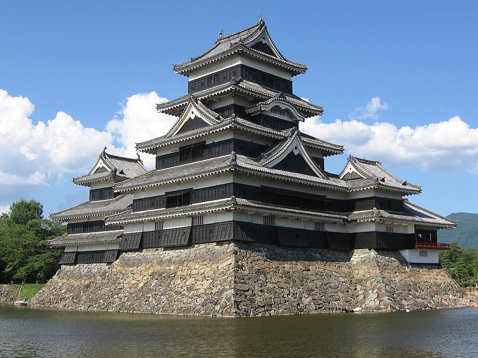松本城本圖展示此景點；複合景點以其中一處具代表性的景色配圖。作者：柑橘類 (talk)作品：Matsumoto_Castle_1-1.jpg原圖與來源 · CC BY-SA 3.0縮小尺寸；網頁以 4:3 裁切顯示。裁切顯示版本沿用原圖授權。
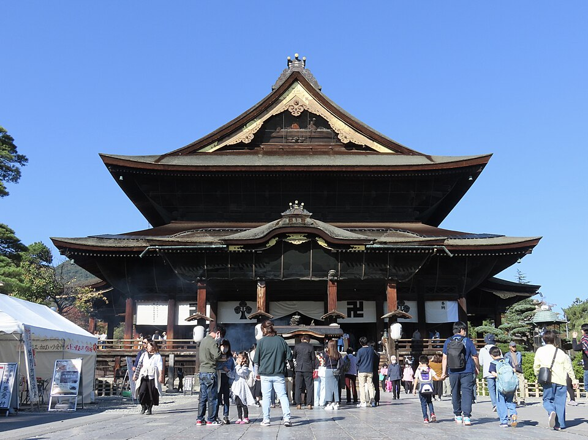善光寺本圖展示此景點；複合景點以其中一處具代表性的景色配圖。作者：快速踊り子作品：Zenkoji_Temple_Hondo.jpg原圖與來源 · CC BY-SA 4.0縮小尺寸；網頁以 4:3 裁切顯示。裁切顯示版本沿用原圖授權。
地獄谷野猿公苑本圖展示此景點；複合景點以其中一處具代表性的景色配圖。作者：Yosemite作品：Jigokudani_hotspring_in_Nagano_Japan_001.jpg原圖與來源 · CC BY-SA 3.0縮小尺寸；網頁以 4:3 裁切顯示。裁切顯示版本沿用原圖授權。
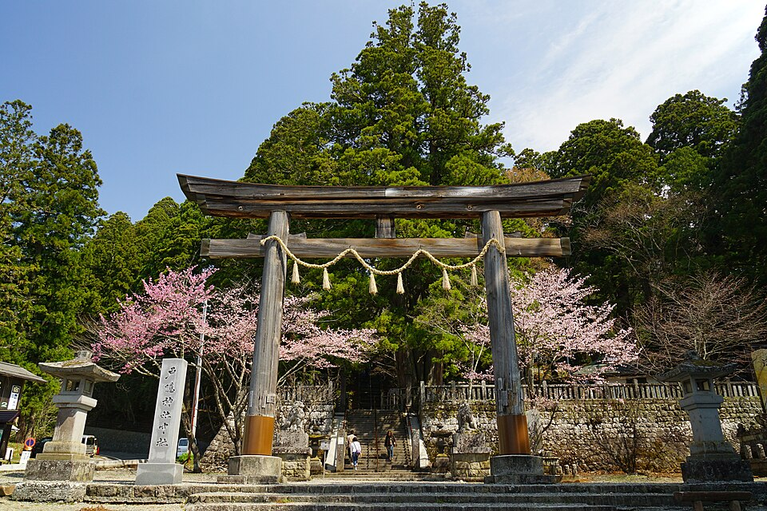戶隱神社本圖展示此景點；複合景點以其中一處具代表性的景色配圖。作者：663highland作品：160430_Togakushi-jinja_Chusha_Nagano_Japan02n.jpg原圖與來源 · CC BY 2.5縮小尺寸；網頁以 4:3 裁切顯示。裁切顯示版本沿用原圖授權。
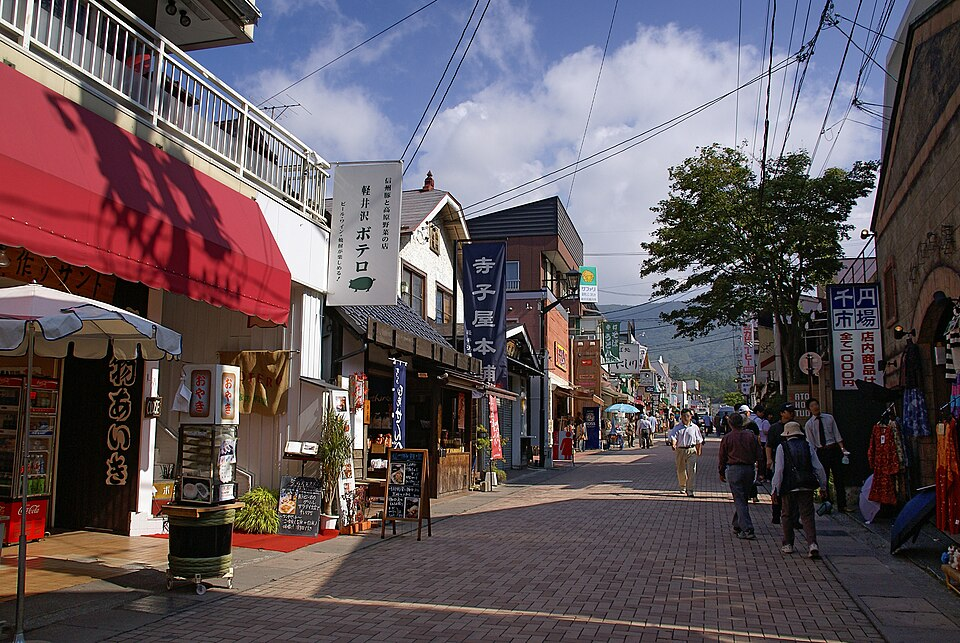舊輕井澤銀座本圖展示此景點；複合景點以其中一處具代表性的景色配圖。作者：663highland作品：Old_Karuizawa_ginza04s3200.jpg原圖與來源 · CC BY 2.5縮小尺寸；網頁以 4:3 裁切顯示。裁切顯示版本沿用原圖授權。
雲場池本圖展示此景點；複合景點以其中一處具代表性的景色配圖。作者：663highland作品：160729_Kumoba-ike_Karuizawa_Japan05s3.jpg原圖與來源 · CC BY 2.5縮小尺寸；網頁以 4:3 裁切顯示。裁切顯示版本沿用原圖授權。
白絲瀑布（輕井澤）本圖展示此景點；複合景點以其中一處具代表性的景色配圖。作者：663highland作品：Karuizawa_shiraito-no-taki03s3200.jpg原圖與來源 · CC BY 2.5縮小尺寸；網頁以 4:3 裁切顯示。裁切顯示版本沿用原圖授權。
榆樹街小鎮本圖展示此景點；複合景點以其中一處具代表性的景色配圖。作者：663highland作品：160730 Harunire Terrace Karuizawa Nagano pref Japan04n.jpg原圖與來源 · CC BY 2.5縮小尺寸；網頁以 4:3 裁切顯示。裁切顯示版本沿用原圖授權。
白馬八方尾根本圖展示此景點；複合景點以其中一處具代表性的景色配圖。作者：Ski Mania作品：Hakuba_Happo-one_Winter_Resort.JPG原圖與來源 · Public domain縮小尺寸；網頁以 4:3 裁切顯示。裁切顯示版本沿用原圖授權。
HAKUBA MOUNTAIN HARBOR白馬岩岳 HAKUBA MOUNTAIN HARBOR 的觀景平台與北阿爾卑斯山秋景。作者：くろふね作品：白馬岩岳マウンテンリゾート20211030-IMG 7155.jpg原圖與來源 · CC BY 4.0縮小尺寸；網頁以 4:3 裁切顯示。裁切顯示版本沿用原圖授權。
妻籠宿本圖展示此景點；複合景點以其中一處具代表性的景色配圖。作者：DimiTalen作品：Looking up the Nakasendō in the central part of the village, Tsumago-juku, Nagiso, 2016.jpg原圖與來源 · CC0縮小尺寸；網頁以 4:3 裁切顯示。裁切顯示版本沿用原圖授權。
奈良井宿本圖展示此景點；複合景點以其中一處具代表性的景色配圖。作者：Luka Peternel作品：Narai-juku-facing-south-west-2019-Luka-Peternel.jpg原圖與來源 · CC BY-SA 4.0縮小尺寸；網頁以 4:3 裁切顯示。裁切顯示版本沿用原圖授權。
諏訪湖本圖展示此景點；複合景點以其中一處具代表性的景色配圖。作者：Irvin作品：Lake_Suwa_as_seen_from_Tateishi_Park_(east).jpg原圖與來源 · CC BY 4.0縮小尺寸；網頁以 4:3 裁切顯示。裁切顯示版本沿用原圖授權。
諏訪大社本圖展示此景點；複合景點以其中一處具代表性的景色配圖。作者：Saigen Jiro作品：Suwa-taisha,_Kamisha_Honmiya,_haiden-1.jpg原圖與來源 · CC0縮小尺寸；網頁以 4:3 裁切顯示。裁切顯示版本沿用原圖授權。
立山黑部・扇澤至黑部湖路段扇澤至黑部湖路段的黑部湖景觀。作者：柑橘類 (talk)作品：Lake Kurobe 1-1.jpg原圖與來源 · CC BY-SA 3.0縮小尺寸；網頁以 4:3 裁切顯示。裁切顯示版本沿用原圖授權。
千疊敷冰斗本圖展示此景點；複合景點以其中一處具代表性的景色配圖。作者：Ans作品：Senjo-jiki2.JPG原圖與來源 · CC BY-SA 3.0縮小尺寸；網頁以 4:3 裁切顯示。裁切顯示版本沿用原圖授權。
美原高原本圖展示此景點；複合景點以其中一處具代表性的景色配圖。作者：KBJUN作品：Ushibuseyama_observatory.jpg原圖與來源 · CC BY-SA 3.0縮小尺寸；網頁以 4:3 裁切顯示。裁切顯示版本沿用原圖授權。
野澤溫泉本圖展示此景點；複合景點以其中一處具代表性的景色配圖。作者：小石川人晃作品："Oyu" in Nozawa Onsen.jpg原圖與來源 · CC BY-SA 4.0縮小尺寸；網頁以 4:3 裁切顯示。裁切顯示版本沿用原圖授權。
志賀高原本圖展示此景點；複合景點以其中一處具代表性的景色配圖。作者：間瀬晴之作品：ShigaYokote.jpg原圖與來源 · CC BY 3.0縮小尺寸；網頁以 4:3 裁切顯示。裁切顯示版本沿用原圖授權。